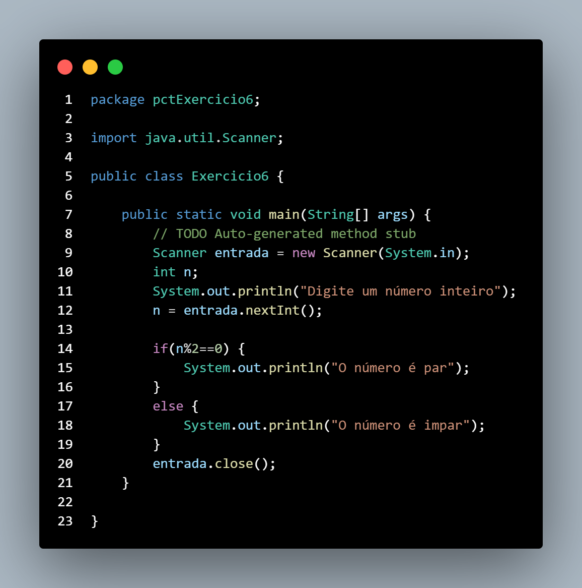

Lista 1
1 - Faça um algoritmo para calcular a média final da disciplina de Programação, mostrar essa média final e também uma mensagem informando se o aluno foi aprovado (média >= 7) ou reprovado. Considere duas avaliações.
2 - Faça um algoritmo que receba a idade do usuário e verifique se ele tem 18 anos ou mais. Se a resposta for positiva escrever “maior de idade”, senão “menor de idade”.
3 - Faça um algoritmo que receba três números inteiros e mostre o maior deles. Considere que os números sempre serão diferentes.
4 - A empresa XKW concedeu um bônus de 20% do valor do salário a todos os funcionários com tempo de trabalho na empresa igual ou superior a 5 anos e de 10% aos demais. Faça um algoritmo que receba o salário e o tempo de serviço de um funcionário, calcule e mostre o valor do bônus recebido por ele.
5 - Implemente um código para aprovar empréstimo bancário. O código deve pedir 3 informações: valor do empréstimo, número de parcelas e salário do solicitante. Aprovar empréstimo caso o valor das parcelas representem no máximo 30% do salário do solicitante.
6 - Faça um algoritmo que receba um número inteiro qualquer e mostre se ele é par ou impar.

7 - Tendo como entrada o total vendido por um funcionário no mês de abril, faça um algoritmo que calcule e mostre a sua comissão e seu salário bruto neste mês, sabendo que o seu salário base é R$1.200,00 e sua comissão é de 10% sobre o total vendido. O funcionário só ganhará comissão se o valor total vendido for maior que R$2.000,00.
8 - Construa um algoritmo que, tendo como dados de entrada a altura (H) e o sexo (S) de uma pessoa calcule e apresente seu peso ideal utilizando as seguintes fórmulas: Para homens: Peso ideal (P) = (72,7 * H) – 58 Para mulheres: Peso ideal (P) = (62,1 * H) – 44,7
9 - Construa um algoritmo para calcular o valor a ser pago pelo período de estacionamento do automóvel (PAG). O usuário entra com os seguintes dados: hora (HE) e minuto (ME) de entrada, hora (HS) e minuto (MS) de saída. Sabe-se que este estacionamento cobra hora cheia, ou seja, se passar um minuto ele cobra a hora inteira. O valor cobrado pelo estacionamento é: •R$ 4,00 para 1 hora de estacionamento •R$ 6,00 para 2 horas de estacionamento •R$ 1,00 por hora adicional (acima de 2 horas)
10 - Construa um algoritmo que determine quanto será gasto para encher o tanque de um carro (VG), sabendo-se que o preço da gasolina é de R$ 1,80 e o preço do álcool é de R$ 1,00. O usuário fornecerá os seguintes dados: Tipo de carro (TC) (G – gasolina ou A – álcool) e Capacidade do tanque (CT), em litros
Lista 2
1 - Complete o Programa abaixo, calculando a soma, subtração, multiplicação e a divisão de dois números.

2 - Desenvolva um programa que faça a tabuada de um número qualquer inteiro que será digitado pelo usuário, mas a tabuada não deve necessariamente iniciar em 1 e terminar em 10, o valor inicial e final devem ser informados também pelo usuário, conforme exemplo abaixo: a. Montar a tabuada de: 5 b. Começar por: 4 c. Terminar em: 7 d. Vou montar a tabuada de 5 começando em 4 e terminando em 7: e. 5 X 4 = 20 f. 5 X 5 = 25 g. 5 X 6 = 30 h. 5 X 7 = 35 Obs: Você deve verificar se o usuário não digitou o final menor que o inicial.
3 - O cardápio de uma lanchonete é o seguinte: a. Especificação Código Preço b. Cachorro Quente 100 R$ 1,20 c. Bauru Simples 101 R$ 1,30 d. Bauru com ovo 102 R$ 1,50 e. Hambúrguer 103 R$ 1,20 f. Cheeseburguer 104 R$ 1,30 g. Refrigerante 105 R$ 1,00 Faça um programa que leia o código dos itens pedidos e as quantidades desejadas. Calcule e mostre o valor a ser pago por item (preço * quantidade) e o total geral do pedido. Considere que o cliente deve informar quando o pedido deve ser encerrado.
4 - Faça um programa em java que repita a música dos patinhos da Xuxa n patinhos foram passear Além das montanhas Para brincar A mamãe gritou: Quá, quá, quá, quá Mas só n-1 patinhos voltaram de lá. Que se repete até nenhum patinho voltar de lá. Ao final, todos os patinhos
Lista Plus
1 - Faça um programa que receba um número de 0 a 10 e escreva o número por extenso.